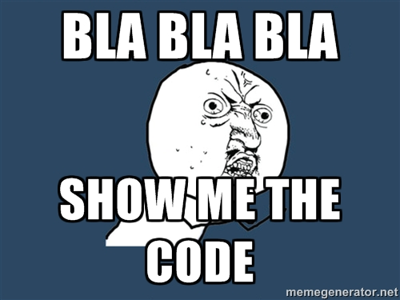
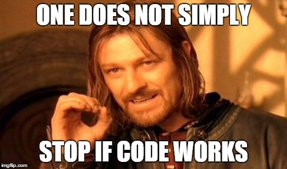
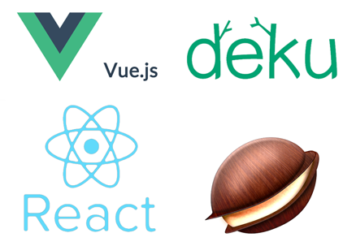
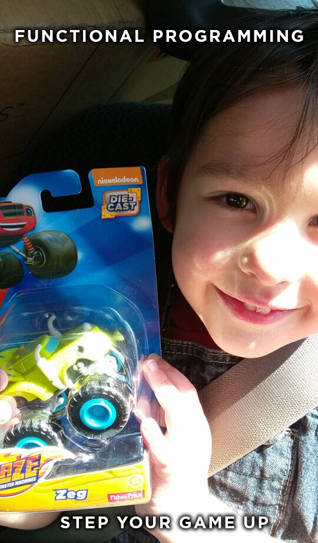

Functional Programming
A true renewal of thoughts

Created by Hook Studios
What is Functional Programming?
Functional Programming
Advantages of using Functional Programming
Functional Programming
By avoiding mutating global state:
- You drastically reduce the likelihood of bugs
- Functions are no longer affected by “hidden state”
- Reliance upon state is one of the largest contributors to system complexity.
Functional Programming
Debugging becomes easier
- There’s no guesswork about how a function will perform at different points in the program.
- The function can be easily isolated to check values.
Functional Programming
You minimize the cost of changing your code:
- Without relying on state, the changes touch far less of your code.
Functional Programming
The code becomes easily testable
- Unit tests are a breeze to write when a function only relies on the arguments passed to it.
- Tests help you maintain your code and save future-you from having to remember what the code needs to do. Failed tests will remind you!
Functional Programming

Functional Programming
Core Concepts

Functional Programming
Pure functions are more reusable / composable
FP encourages functions that are short, simple and do one thing.
- Function names become expressive and meaningful (e.g. “hasID” or “addsTimeStamp”)
- Shorter functions are easier to understand
- Smaller functions can be reused as part of more complex tasks.
- When higher-level functions are composed of smaller functions they become more robust, less fragile.

Functional Programming
Pure Functions
let array = [1, 2, 3, 4, 5];
// pure
array.slice(0, 2);
console.log(`[${array}]`); // [1,2,3,4,5]
array.slice(0, 2);
console.log(`[${array}]`); // [1,2,3,4,5]
array.slice(0, 2);
console.log(`[${array}]`); // [1,2,3,4,5]
// impure
array.splice(0, 2);
console.log(`[${array}]`); // [3,4,5]
array.splice(0, 2);
console.log(`[${array}]`); // [5]
array.splice(0, 2);
console.log(`[${array}]`); // []
Functional Programming
First-Class functions: An entity which supports all the operations generally available to other entities” such as
- Being passed as an argument
- Being returned from a function
- Being assigned to a variable
- In other words: An object that also happens to be a function.
Functional Programming
First-Class Functions
// Function declaration. Okay but can't be nested within non-function blocks
// The whole thing gets hoisted at compile time. (beware)
function double(x) {
return x * x;
}
// Function expression, first class! 'var double = undefined' gets hoisted
// but the definition itself does not. (so chill)
var double = function(x) {
return x * x;
}
// function can be stored in an array, first class!
var myArray = [5, 'socks', {a: 3}, double, false, Nan, []];
var nums = [1, 1, 2, 3, 5, 8];
// functon can be passed as an argument, first class!
var sum = nums.map(double); // [1, 1, 4, 9, 25, 64]
Functional Programming
High-Order functions are defined as:
- Functions that can receive other functions as parameters OR return functions OR both.
- Functions that operate on other functions are called higher-order functions. By operating on functions, they can talk about actions on a whole new level.
- Higher-order functions can be used to generalize many algorithms that regular functions cannot easily describe.
Functional Programming
High-Order Functions
function or(p1, p2) {
return function(x) {
return p1(x) || p2(x);
}
}
function negative(x) {
return x < 0;
}
function positive(x) {
return x > 0;
}
var nonzero = or(negative, positive);
alert(nonzero(-5));
alert(nonzero(0));
alert(nonzero(5));
Functional Programming
Immutable State: You can’t change any global state at all (even though you can get a new state).
- Changing the file system
- Mutating outside variables
- Getting user input
- Accessing system state
- Adding a new variable to a data structure.
Functional Programming
Immutable State
let array = [1, 2, 3, 4, 5];
// splice() mutates the original data (bad!)
array.splice(0, 2);
console.log(`[${array}]`); // [3,4,5]
array.splice(0, 2);
console.log(`[${array}]`); // [5]
array.splice(0, 2);
console.log(`[${array}]`); // []
// slice() given the same input will always return the same output (yay!)
array.slice(0, 2);
console.log(`[${array}]`); // [1,2,3,4,5]
array.slice(0, 2);
console.log(`[${array}]`); // [1,2,3,4,5]
array.slice(0, 2);
console.log(`[${array}]`); // [1,2,3,4,5]
Functional Programming
Immutable State

Functional Programming
Closure: A loveable concept
- Data saved inside a function that is only accessible to a specific returning function.
- This of course plays nicely with pure functions as we only mutate internal variables in a functional approach.
- Closures have three scope chains: It has access to its own scope, the outer function’s variables and of course global variables - but we don’t use global variables in functional programming.
Functional Programming
Closure
let add = function(a){
return function(b){
return a + b;
}
};
// the variable 'a' is enclosed and
// is only accessible to the returning function.
let add10 = add(10);
let result = add10(20);
console.log(result);
Functional Programming
The Basics

Functional Programming
Have you heard of Ramda or currying?

Not quite....
Functional Programming
Currying
- You can call a function with fewer arguments than it expects. It returns a function that takes the remaining arguments.
// normal - regular addition
let add = (a, b) => a + b;
// let add = function(a, b) {
// return a + b;
// };
console.log(`Normal JS Invocation: ${add(1, 2)}`); // 3
console.log(`Normal JS Invocation: ${add(1, 2, 'IGNORE ME')}`); // 3
console.log(`Normal JS Invocation: ${add(1)}`); // NaN
Functional Programming
Currying
// curried - curried addition
// a curried function is one where multiple arguemnts are described by a
// series of one-argument functions.
let addCurried = a => b => a + b;
// let addCurried = function(a) {
// return function(b) {
// return a + b;
// };
// };
let cAdd = addCurried(1);
console.log(`Curried: ${cAdd(2)}`); // 3
console.log(`Curried: ${cAdd(2, 'IGNORE ME')}`); // 3
// ramda - makes stuff easier
let ramdaCurried = R.curry(add);
let rAdd = ramdaCurried(1);
console.log(`Curried: ${rAdd(2)}`); // 3
console.log(`Curried: ${rAdd(2, 'IGNORE ME')}`); // 3
- Ramda is your friend
Functional Programming
Currying
let objects = [{ id: 1 }, { id: 2 }, { id: 3 }];
console.log(`w/o Curry: [${objects.map(o => o.id)}]`); // [1, 2, 3]
let get = R.curry((property, object) => {
return object[property];
});
console.log(`w/ Curry: [${objects.map(get('id'))}]`); // [1, 2, 3]
// Take it even further!
let map = R.curry((fn, value) => value.map(fn));
let getIDS = map(get('id'));
console.log(`Super Ultra Functional: [${getIDS(objects)}]`); // [1, 2, 3]
Functional Programming
Compose
- Composing functions allows us to build complex functions from many simple, generic functions.
- By treating functions as building blocks for other functions, we can build truly modular applications with excellent readability and maintainability.
Functional Programming
Compose
// function that combines two functions together - run function 'f'
// on the rest of function 'g'
var compose = function(f, g) {
return function(x) {
return f(g(x));
};
};
// es6 hyper-terse equivalent
const compose = (f, g) => (x) => f(g(x));
const upperCase = (str) => str.toUpperCase();
const trim = (str) => str.replace(/^\s+I\s+$/g, '');
const replaceIWithBang = (str) => str.replace(/[i]/g, '!');
const labelMaker = compose(upperCase, trim);
// Ramda's built-in compose method takes any number of functions and
// will return them right-to-left
const coolLabelMaker = R.compose(upperCase, replaceIWithBang, trim);
let labels = [' iconic ', 'high five ', ' bim bap'].map(labelMaker);
let coolLabels = [' iconic ', 'high five ', ' bim bap'].map(coolLabelMaker);
console.log(labels); // [ 'ICONIC', 'HIGH FIVE', 'BIM BAP']
console.log(coolLabels); // ["!CON!C", "H!GH F!VE", "B!M BAP"]
Functional Programming
Functors

Not to be confused with funk-sters
Functional Programming
Functor
- Functors map between categories.
- They can be thought of as functions that lift values out of a container, morph them, and then put them into a new container.
- The first input is a morphism for the type and the second input is the container.
// Note that the type signature for functors looks like so
// my functor :: (a -> b) -> f a -> f b
Functional Programming
Functor
We already have one functor: map(). It grabs the values within the container, an array, and applies a function to it.
var nums = [1, 4, 9];
nums.map(Math.sqrt); // [1, 2, 3]
However, we'll need to write it as a global function and not as a method of the array. This allows us to write cleaner, safter code later on.
// map :: (a -> b) -> [a] -> [b]
var map = function(f, a) {
return arr(a).map(func(f));
}
Functional Programming

Functional Programming
map()
arr.map(callback [, argument]);
var integers = [1,-0,9,-8,3];
var numbers = [1,2,3,4];
var str = 'hello world how ya doing?';
// map integers to their absolute values
integers.map(Math.abs);
// multiply an array of numbers by their position in the array
numbers.map(function(x, i){return x*i});
// Capitalize every other word in a string.
str.split(' ').map(function(s, i) {
if (i%2 == 0) {
return s.toUpperCase();
}
else {
return s;
}
});
Functional Programming
filter()
arr.filter(callback [, argument]);
var myarray = [1,2,3,4];
var words = 'hello 123 world how 345 ya doing'.split(' ');
var re = '[a-zA-Z]';
// remove all negative numbers
[-2,-1,0,1,2].filter(function(x){return x>0});
// remove null values after a map operation
words.filter(function(s){
return s.match(re);
});
// remove random objects from an array
myarray.filter(function(){
return Math.floor(Math.random()*2)
});
Functional Programming
reduce()
arr.reduce(callback [, initialValue]);
var numbers = [1,2,3,4];
// sum up all the values of an array
[1,2,3,4,5].reduce(function(x,y){return x+y}, 0);
// sum up all the values of an array
[1,2,3,4,5].reduce(function(x,y){return x+y}, 0);
// find the largest number
numbers.reduce(function(a,b){
return Math.max(a,b)}) // max takes two arguments
);
Functional Programming
Lilly Inception Refactor
Functional Programming
Canvas.js
'use strict';
var createjs = require('createjs');
var canvas;
var stage;
var exportRoot;
// set canvas id
var Canvas = function() {
canvas = document.getElementById('you-line');
};
// initialize canvas animation
Canvas.prototype.init = function() {
exportRoot = new lib02.Youtube_Beacon05_Lily_970x250();
stage = new createjs.Stage(canvas);
stage.addChild(exportRoot);
stage.update();
stage.enableDOMEvents(false);
};
// start canvas animation
Canvas.prototype.start = function() {
canvas.style.opacity = 1;
createjs.Ticker.setFPS(lib02.properties.fps);
createjs.Ticker.addEventListener('tick', stage);
};
module.exports = Canvas;
Functional Programming
Canvas.js - refactored
'use strict';
import createjs from 'createjs';
export default function() {
const youLine = document.getElementById('you-line');
const exportRoot = new lib02.Youtube_Beacon05_Lily_970x250();
const stage = new createjs.Stage(youLine);
const canvas = Object.create({});
canvas.init = () => {
stage.addChild(exportRoot);
stage.update();
stage.enableDOMEvents(false);
};
canvas.start = () => {
youLine.style.opacity = 1;
createjs.Ticker.setFPS(lib02.properties.fps);
createjs.Ticker.addEventListener('tick', stage);
};
return canvas;
};
Functional Programming
Loader.js
'use strict';
function Loader( manifest ) {
this.manifest = manifest;
this.loadItems = 0;
this.loadItemsTotal = 0;
this.loadComplete = false;
this.consoleObject = {
loaded: 0.0
};
manifest.forEach(function(item) {
//console.log(item.src)
this._loadImage(item.src);
}.bind(this));
this._loadScript('js/vendor.js');
}
Loader.prototype._loadImage = function( path ) {
this.consoleObject[path] = false;
var img = new Image();
img.addEventListener( 'load', this._onLoad.bind( this, path ) );
img.src = path;
this.loadItemsTotal++;
};
Loader.prototype._loadScript = function( path ) {
this.consoleObject[path] = false;
global.Enabler.loadScript( global.Enabler.getUrl( path ), this._onLoad.bind( this, path ) );
this.loadItemsTotal++;
};
Loader.prototype._onLoad = function ( id ) {
this.loadItems++;
this.consoleObject[id] = true;
this.consoleObject.loaded = Math.round( ( this.loadItems / this.loadItemsTotal ) * 100 ) + '%';
if ( this.loadItemsTotal === this.loadItems ) {
this._onLoadComplete();
}
};
Loader.prototype._onLoadComplete = function () {
// this.callback();
if (this.loadComplete === true) {
return;
}
this.loadComplete = true;
this._loadScript('js/main.build.js');
};
module.exports = Loader;
Functional Programming
Loader.js - refactored
'use strict';
export default function(manifest) {
//Loads all the images in the manifest
const loadImage = function(path) {
return new Promise((resolve, reject) => {
let img = new Image();
img.addEventListener('load', resolve);
img.addEventListener('error', reject);
img.src = path.src;
});
};
//loads vendor and main.build scripts, individually
const loadScript = function(path) {
return new Promise((resolve, reject) => {
global.Enabler.loadScript(global.Enabler.getUrl(path), resolve);
});
};
const loadImagePromise = manifest.map(loadImage);
const loadVendor = loadScript('js/vendor.js');
const loadMain = () => loadScript('js/main.build.js');
//After all the images have loaded, then load in vendor, lastly load
//mainbuild.js
Promise.all(loadImagePromise.concat(loadVendor)).then(loadMain);
};
Functional Programming
Animation.js
'use strict';
var TweenMax = require('TweenMax');
var AnimationController = function () {
// selectors
this.player = document.querySelector('#player');
this.animationWrap = document.querySelector('#animation');
this.loader = document.querySelector('#loading');
this.whiteBox = document.querySelector('#white-box');
this.lillyText = document.querySelector('#lilly-text');
this.fansText = document.querySelector('#fans-text');
this.slash = document.querySelector('#slash');
this.underlay = document.querySelector('#underlay');
this.lozenge = document.querySelector('#lozenge');
// booleans
this.endOnce = true;
this.init();
};
// initialize controller, build all timelines.
AnimationController.prototype.init = function() {
this.globalTimeline = new TimelineMax({paused: true});
this.globalTimeline.add(this.tl1(), 0.0);
this.globalTimeline.add(this.tl2(), 21.25);
return this.globalTimeline;
};
// timeline 0 - loading wipe animation
AnimationController.prototype.tl1 = function () {
this.tl1 = new TimelineMax();
this.tl1.to([this.underlay, this.loader], 0.4, {autoAlpha: 0, ease: Power1.easeOut});
return this.tl1;
};
// timeline 4 - last zoom in of branding
AnimationController.prototype.tl2 = function () {
this.tl2 = new TimelineMax();
this.tl2.fromTo(this.animationWrap, 3.225, {x: '-200%',
autoAlpha: 1,
scaleX: 10,
scaleY: 10},
{x: '0%',
scaleX: 1,
scaleY: 1,
ease: Power3.easeOut});
return this.tl2;
};
// make player visible, set animation wrap and fire tl0
AnimationController.prototype.start = function () {
this.player.style.opacity = 1;
this.globalTimeline.play();
};
// play animation
AnimationController.prototype.play = function () {
this.globalTimeline.play();
};
// seek animation
AnimationController.prototype.seek = function(time) {
this.globalTimeline.seek(time);
};
// pause animation
AnimationController.prototype.pause = function () {
this.globalTimeline.pause();
};
// kill all animations, end banner
AnimationController.prototype.endState = function () {
if (this.endOnce) {
TweenMax.killAll(true, true, true, true);
TweenMax.set(this.animationWrap, {autoAlpha: 1});
this.endOnce = false;
}
};
module.exports = AnimationController;
Functional Programming
Animation.js - refactored
'use strict';
import TweenMax from 'TweenMax';
export default function() {
// selectors
const player = document.querySelector('#player');
const animationWrap = document.querySelector('#animation');
const loader = document.querySelector('#loading');
const whiteBox = document.querySelector('#white-box');
const lillyText = document.querySelector('#lilly-text');
const fansText = document.querySelector('#fans-text');
const slash = document.querySelector('#slash');
const underlay = document.querySelector('#underlay');
const lozenge = document.querySelector('#lozenge');
// timeline
let timeline = null;
// booleans
let endOnce = true;
const animation = Object.create({});
animation.init = () => {
timeline = new TimelineMax({paused: true});
timeline.add(fadeOutLoader(), 0.0);
timeline.add(animateBranding(), 21.25);
return timeline;
};
function fadeOutLoader() {
const tl = new TimelineMax();
tl.to([underlay, loader], 0.4, {autoAlpha: 0, ease: Power1.easeOut});
return tl;
};
function animateBranding() {
const tl = new TimelineMax();
tl.fromTo(animationWrap, 3.225, {x: '-200%',
autoAlpha: 1,
scaleX: 10,
scaleY: 10},
{x: '0%',
scaleX: 1,
scaleY: 1,
ease: Power3.easeOut});
return tl;
};
animation.start = () => {
player.style.opacity = 1;
timeline.play();
};
animation.play = () => timeline.play();
animation.seek = (time) => timeline.seek(time);
animation.pause = () => timeline.pause();
animation.endState = () => {
if (endOnce) {
TweenMax.killAll(true, true, true, true);
TweenMax.set(animationWrap, {autoAlpha: 1});
endOnce = false;
}
};
return animation;
};
Functional Programming
Functional Programming
Let's talk Frameworks
Functional Progamming
React
- Components provide abstractions
- Composable Functions
- Virtual DOM
Functional Progamming
Deku
- "Functional alternative to React"
- Define your UI as a tree of components
- Virtual DOM
Functional Progamming
Vue

- Provides reactive and composable View components
- Uses the actual DOM as the template
- Limited to environments where DOM is present
Functional Programming
Let's talk Libraries

Functional Programming
Let's talk Libraries
As the years go, Internet Explorer 9 has faded into the past and native ES5 methods are expected for most applications. So the role of functional programming libraries has shifted from a compatibility layer to adding new, foundational methods for functional programming.
Functional Programming
Underscore

- 1st Generation Library
- Cross-browser compatibility
- JavaScript utility library
Functional Programming
LoDash
- Preferred alternative to Underscore
- loadash/fp module
- Generic utility belt
Functional Programming
Ramda
- 2nd generation functional programming library
- Javascript feel
- Lots of breaking changes, because it hasn't reached 1.0
Functional Programming
Why bother?

Functional Programming
Functional Programming encourages functions that:
- accept at least one argument
- return at least one value
- avoid mutating data ouside of its own scope
When you don't mutate global state...
You drastically reduce the liklihood of bugs
- Functions are no longer affected by "hidden state"
- You circumvent race conditions which occur when output is dependent on a sequence of uncontrollable events such as the network, device latency, user input or anything that occurs randomly. E.g. Google Instant
- "Reliance upon state is one of the largest contributors to system complexity"
When you don't mutate global state...
Debugging becomes easier
- There's no guesswork about how a function will perform at different points in the program.
- The function can be easily isolated to check values
When you don't mutate global state...
Changing the code is less painful
- Without relying on state, changes touch far less of your code
- The code becomes easily testable
- Unit tests are a breeze to write when a function only relies on arguments passed directly to it
- Tests help you maintain your code and save future-you from having to remember what the code needs to do. Failed tests will remind you!

Pure functions are more reusable
- Functional programming encourages functions that are short, simple, and do one thing
- Function names become expressive and meainingful (e.g. "hasID" or "addsTimeStamp")
- Short functions are easier to understand
- Smaller functions can be reused as part of more complex tasks
- When higher-level functions are composed of smaller functions they become more robust, less fragile.
Pure functions can be cached
- When you cache using 'memoization' you get better performance
- Recursive functions, normally too expensive, become viable
The best part...
- You don't have to completely abandon your current practices!
- Functional code can live next to Object Oriented code
- An existing code base can be updated gradually
- Learning and using a few patterns of functional programming is a great start towards cleaner and more elegant code
The End
Functional programming is a style that emphasizes and enables the writing of smarter code, which minimizes complexity and increases modularity.

The End
JavaScript provides an excellent medium for this approach.

The End
Resources
- Learn JavaScript: The best methods and resources according to 25 JavaScript experts
- Introduction to Immutable.js and Functional Programming Concepts
- Mostly Adequate Guide to Functional Programming
- Eloquent JavaScript - Functional Programming
- The Two Pillars of JavaScript — Pt 2: Functional Programming
- An Intro to Functional Programming Concepts in JavaScript
- Why Curry Helps
- Point-free JavaScript
- Why Ramda?
- Functional Programming should be your #1 priority for 2015
- Functional JavaScript Workshop
- Master the JavaScript Interview: What is a Pure Function?
- Reliance on state, the largest contributor to system complexity
- Cacheing Pure Functions and Memoization
- All evidence points to OOP being bullshit
- Predicates in Javascript
- Lilly Inception - Refactored